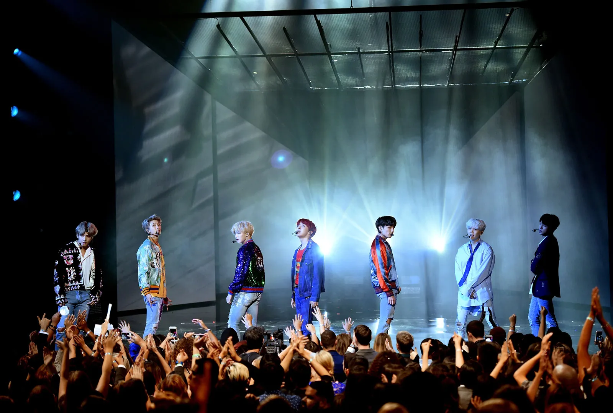

Фандом BTS называется ARMY. Они поддерживают группу по всему миру.Название ARMY у фэндома BTS появилось 9 июля 2013 года. Это произошло вскоре после выхода дебютного сингла группы «2 Cool 4 Skool». ARMY — это аббревиатура английской фразы «Adorable Represetatives MC for Youth», что дословно переводится как 'очаровательный представитель МС для молодежи.
